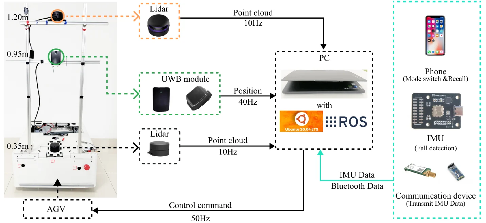

会议论文Conference paper · 2026
A Novel UWB-Based Full-Range and Multi-Angle Following RobotA Novel UWB-Based Full-Range and Multi-Angle Following Robot
第 29 届 Computer Supported Cooperative Work in Design 国际会议（CSCWD）29th International Conference on Computer Supported Cooperative Work in Design (CSCWD)

研究概述Overview
论文面向陪护跟随场景，利用 UWB 引导激光雷达聚类识别目标，在近距离维持多角度跟随；远距离通过无线通信和动态调整范围实现召回。系统还结合双激光雷达、IMU、超声与按钮等输入，并在 ROS 机器人平台上完成实现与测试。For assisted following, the robot uses UWB to guide LiDAR clustering for target identification and maintains multi-angle following at short distances. Wireless communication and adaptive range adjustment support long-range recall. The implementation combines dual LiDARs, IMU, ultrasonic sensing, and button inputs on a ROS robot platform.
核心工作Key Contributions
- 以 UWB 与激光雷达协同处理跟随目标识别和相对定位。Combines UWB and LiDAR for following target identification and relative localization.
- 统一近距离多角度跟随与远距离触发召回两类交互。Unifies short-range multi-angle following and long-range triggered recall.
论文报告的实验结果Results Reported in the Paper
0.3–0.7 m论文描述的近距跟随范围Short-range following distance described in the paper
10–30 m论文测试的远距召回范围Long-range recall distance tested in the paper